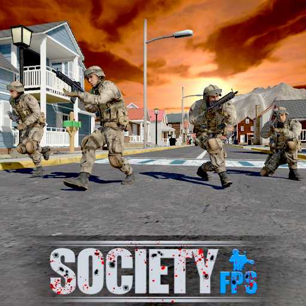
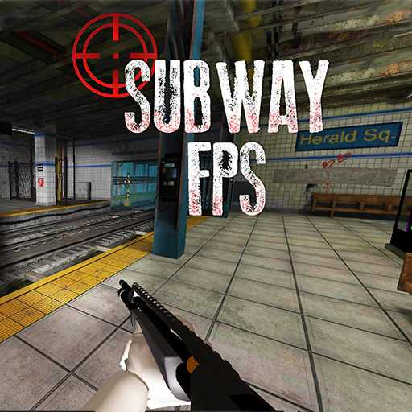
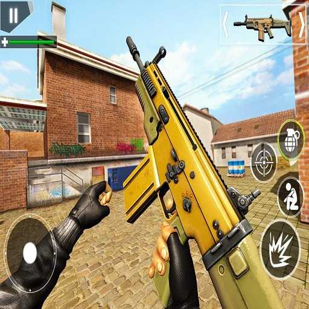
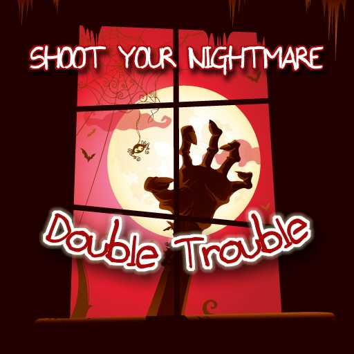
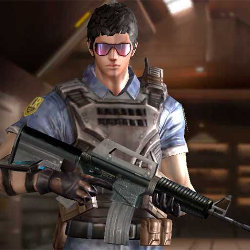
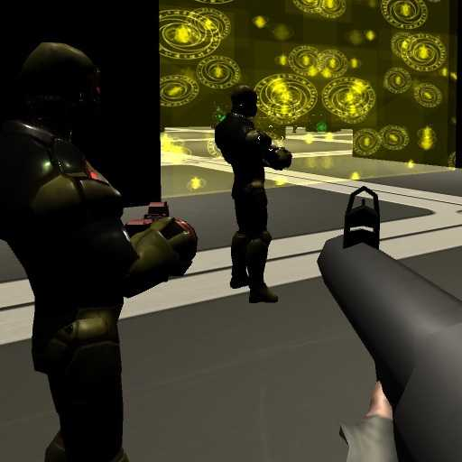
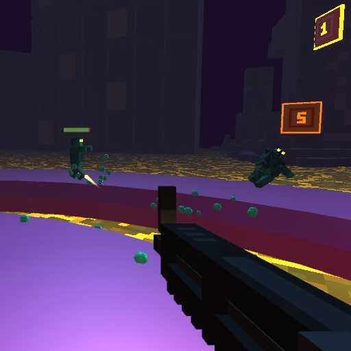
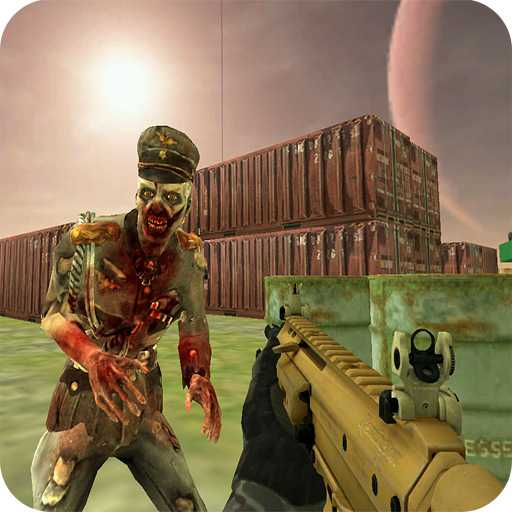
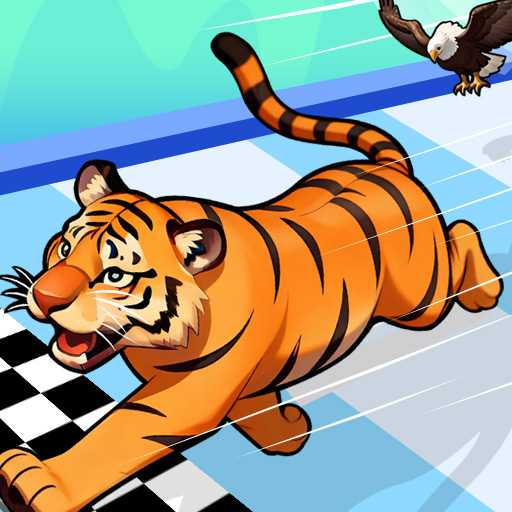
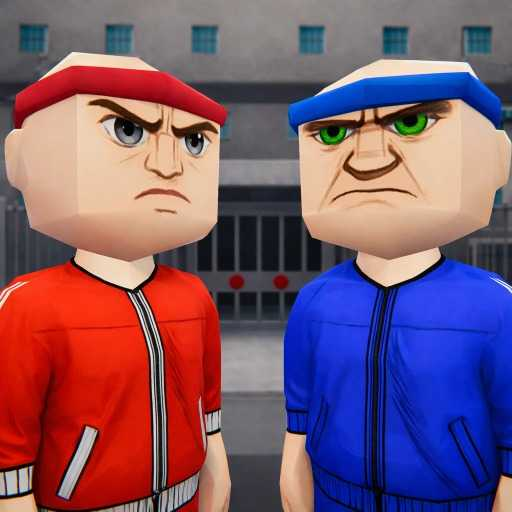

Action Shooters
6 pages in the current catalog.
This catalog focuses on browser-playable action and shooter titles. Some pages are stronger editorial targets than others, and some remain supporting catalog pages while we continue expanding original content.
6 pages in the current catalog.
10 pages in the current catalog.
27 pages in the current catalog.
6 pages in the current catalog.
5 pages in the current catalog.
Action pages on SkillWarz focus on quick browser sessions, direct controls, and easy-to-understand game loops.
Revoxel 3D - Voxel RPG Shooter is cataloged on SkillWarz as a browser game built around fast firefights, direct aim duels, and quick respawn practice.
Open pageSort Balls - Cones is cataloged on SkillWarz as a browser game built around easy-to-start browser action with a clear core loop and readable controls.
Open pageDessert DIY is cataloged on SkillWarz as a browser game built around easy-to-start browser action with a clear core loop and readable controls.
Open pageNight Club Security is cataloged on SkillWarz as a browser game built around easy-to-start browser action with a clear core loop and readable controls.
Open pageObby Football Soccer 3D is cataloged on SkillWarz as a browser game built around easy-to-start browser action with a clear core loop and readable controls.
Open pageMarshmallow Rush is cataloged on SkillWarz as a browser game built around easy-to-start browser action with a clear core loop and readable controls.
Open pageBattle royale pages emphasize survival pressure, looting rhythm, and the last-player-standing loop.
Doge's Battle Royale is cataloged on SkillWarz as a browser game built around survival pressure, positioning, and endgame decision making.
Open pageBattle Royale Noob vs Pro is cataloged on SkillWarz as a browser game built around survival pressure, positioning, and endgame decision making.
Open pageTop Guns IO is cataloged on SkillWarz as a browser game built around easy-to-start browser action with a clear core loop and readable controls.
Open pageBattle Royale Puzzles is cataloged on SkillWarz as a browser game built around survival pressure, positioning, and endgame decision making.
Open pageBattle Royale Coloring Book is cataloged on SkillWarz as a browser game built around survival pressure, positioning, and endgame decision making.
Open pageBattle Royale Jigsaw is cataloged on SkillWarz as a browser game built around survival pressure, positioning, and endgame decision making.
Open pageCube Battle Royale is cataloged on SkillWarz as a browser game built around survival pressure, positioning, and endgame decision making.
Open pageBattle Royale Puzzle Challenge is cataloged on SkillWarz as a browser game built around survival pressure, positioning, and endgame decision making.
Open pagePixel Battle Royale Multiplayer is cataloged on SkillWarz as a browser game built around survival pressure, positioning, and endgame decision making.
Open pagePixel Battle Royale is cataloged on SkillWarz as a browser game built around survival pressure, positioning, and endgame decision making.
Open pageFPS pages highlight aiming feel, movement pace, and the kind of player each browser shooter suits best.
Crab Guards is cataloged on SkillWarz as a browser game built around easy-to-start browser action with a clear core loop and readable controls.
Open pageFPS Toy Realism is cataloged on SkillWarz as a browser game built around fast firefights, direct aim duels, and quick respawn practice.
Open pageMine FPS shooter: Noob Arena is cataloged on SkillWarz as a browser game built around fast firefights, direct aim duels, and quick respawn practice.
Open page3D FPS Target Shooting is cataloged on SkillWarz as a browser game built around fast firefights, direct aim duels, and quick respawn practice.
Open pageMerge Gun Fps Shooting Zombie is cataloged on SkillWarz as a browser game built around fast firefights, direct aim duels, and quick respawn practice.
Open pageHazmob FPS is cataloged on SkillWarz as a browser game built around fast firefights, direct aim duels, and quick respawn practice.
Open pageOffline FPS Royale is cataloged on SkillWarz as a browser game built around survival pressure, positioning, and endgame decision making.
Open pageInfantry Attack Battle 3D FPS is cataloged on SkillWarz as a browser game built around fast firefights, direct aim duels, and quick respawn practice.
Open page
Society FPS is cataloged on SkillWarz as a browser game built around fast firefights, direct aim duels, and quick respawn practice.
Open page
Subway FPS is cataloged on SkillWarz as a browser game built around fast firefights, direct aim duels, and quick respawn practice.
Open pageFPS Assault Shooter is cataloged on SkillWarz as a browser game built around fast firefights, direct aim duels, and quick respawn practice.
Open pageCommand Strike FPS is cataloged on SkillWarz as a browser game built around fast firefights, direct aim duels, and quick respawn practice.
Open pageReal Shooting Fps Strike is cataloged on SkillWarz as a browser game built around fast firefights, direct aim duels, and quick respawn practice.
Open page
FPS Shooting Strike: Modern Combat War 2k20 is cataloged on SkillWarz as a browser game built around fast firefights, direct aim duels, and quick respawn practice.
Open pageDragon Slayer FPS is cataloged on SkillWarz as a browser game built around fast firefights, direct aim duels, and quick respawn practice.
Open pageArmy Fps Shooting is cataloged on SkillWarz as a browser game built around fast firefights, direct aim duels, and quick respawn practice.
Open page
Shoot Your Nightmare Double Trouble is cataloged on SkillWarz as a browser game built around easy-to-start browser action with a clear core loop and readable controls.
Open pageLizard Lady vs Herself is cataloged on SkillWarz as a browser game built around easy-to-start browser action with a clear core loop and readable controls.
Open pageLizard Lady vs The Cats is cataloged on SkillWarz as a browser game built around easy-to-start browser action with a clear core loop and readable controls.
Open page
CS War Gun King FPS is cataloged on SkillWarz as a browser game built around fast firefights, direct aim duels, and quick respawn practice.
Open page
FPS Simulator is cataloged on SkillWarz as a browser game built around fast firefights, direct aim duels, and quick respawn practice.
Open pageThief Fps Fire Marshal is cataloged on SkillWarz as a browser game built around fast firefights, direct aim duels, and quick respawn practice.
Open pageFPS Shooter 3D City Wars is cataloged on SkillWarz as a browser game built around fast firefights, direct aim duels, and quick respawn practice.
Open pageFPS Sniper Shooter: Battle Survival is cataloged on SkillWarz as a browser game built around slow-angle precision and patient line-of-sight control.
Open pageAlien Infestation FPS is cataloged on SkillWarz as a browser game built around fast firefights, direct aim duels, and quick respawn practice.
Open page
FPS Clicker is cataloged on SkillWarz as a browser game built around fast firefights, direct aim duels, and quick respawn practice.
Open page
Battle SWAT VS Mercenary is cataloged on SkillWarz as a browser game built around easy-to-start browser action with a clear core loop and readable controls.
Open pageMultiplayer pages collect browser titles that make sense for short social sessions and instant replays.
Push.io is cataloged on SkillWarz as a browser game built around easy-to-start browser action with a clear core loop and readable controls.
Open pageBrainrots Lava Survive Online is cataloged on SkillWarz as a browser game built around easy-to-start browser action with a clear core loop and readable controls.
Open pageTic Tac Toe Merge is cataloged on SkillWarz as a browser game built around easy-to-start browser action with a clear core loop and readable controls.
Open pageTsunami Brainrots Online is cataloged on SkillWarz as a browser game built around easy-to-start browser action with a clear core loop and readable controls.
Open page
Animal Racing Idle Park is cataloged on SkillWarz as a browser game built around easy-to-start browser action with a clear core loop and readable controls.
Open page
Gang War - Strike Shooter is cataloged on SkillWarz as a browser game built around fast firefights, direct aim duels, and quick respawn practice.
Open pageSniper pages focus on patience, line-of-sight control, and whether a game rewards careful or aggressive shots.
Gun Shooting Games Sniper 3D is cataloged on SkillWarz as a browser game built around slow-angle precision and patient line-of-sight control.
Open pageMafia Sniper Crime Shooting is cataloged on SkillWarz as a browser game built around slow-angle precision and patient line-of-sight control.
Open pageBlock Sniper is cataloged on SkillWarz as a browser game built around slow-angle precision and patient line-of-sight control.
Open pageCounter Craft Sniper is cataloged on SkillWarz as a browser game built around slow-angle precision and patient line-of-sight control.
Open pageAliens Hunter is cataloged on SkillWarz as a browser game built around easy-to-start browser action with a clear core loop and readable controls.
Open page